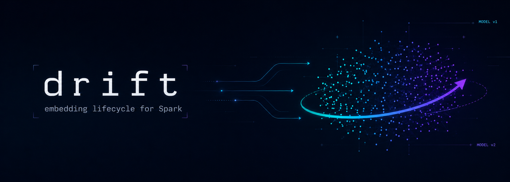
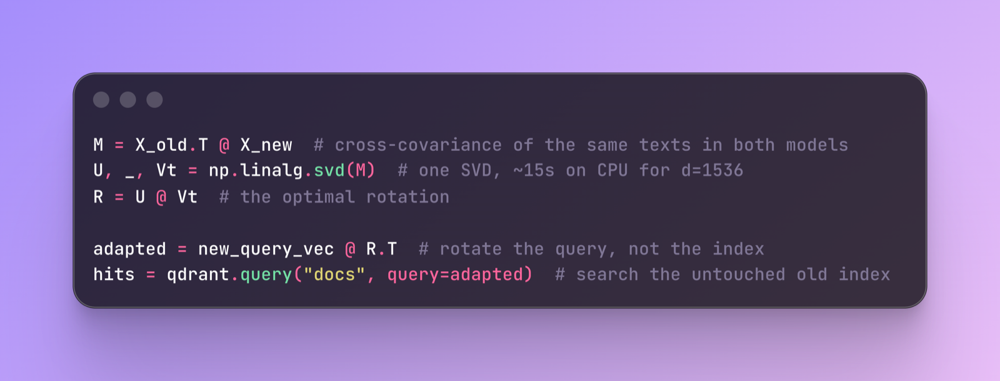
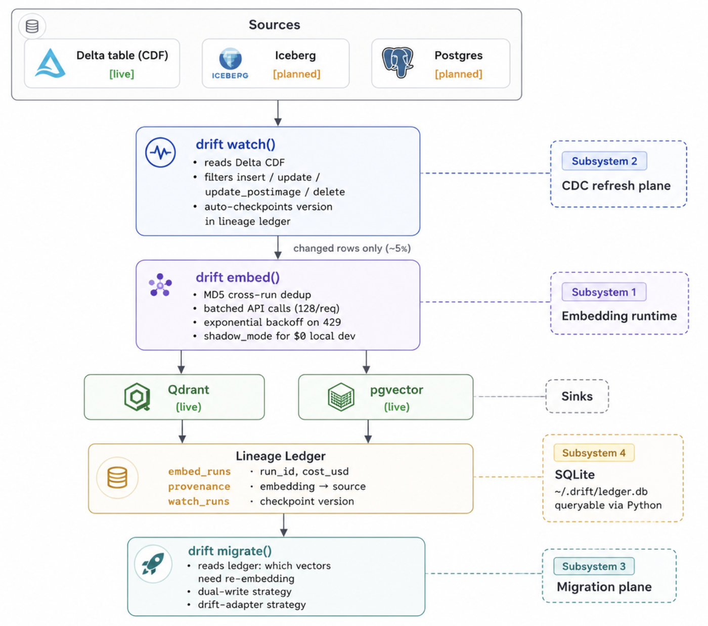

Stop Paying to Re-Embed the Same RAG Data Every Night
10 Jun 2026 · 7 min read · originally on dev.to
GitHub ↗ PyPI · pip install drift-spark ↗
Right now, a cron job at your company is spending $40 a night to discover that nothing changed.
You know the one. Every team doing RAG has it: a 200-line PySpark job that reads a Delta table, chunks the rows, calls an embedding API in a pandas_udf, and upserts the vectors to Qdrant.
It was written by someone who has since left the company, and nobody has read it since. It runs every night at 2am, and every night it makes the same four quiet mistakes:
- It re-embeds everything, every night. All 10M rows, even though ~95% of them didn’t change. That’s the $40: paid in full to re-confirm that nothing happened (back-of-envelope: ~200 tokens/row at $0.02/1M).
- It has no memory. Run it twice, get double the upserts. Kill it mid-run, get partial state and no clean retry.
- It turns model upgrades into a weekend war room. OpenAI deprecates
ada-002, you’re supposed to move to3-small, and the official answer is “build a new index and re-embed all of it.” So most teams just don’t, for a year. - It can’t answer the boring questions. Which table cost what last week? A user invoked GDPR, can you prove their vector is actually gone? In most teams: no.
None of these are hard problems. They’re just nobody’s job. So they survive, untouched, in that one file at every company, until the bill or the audit makes them someone’s job at the worst possible time.
TL;DR
I built Drift to turn that one file into three lifecycle functions plus a ledger:
embed()— produce vectors, with a memorywatch()— refresh only what changedmigrate()— upgrade embedding models without rebuilding the index, when the adapter passes a recall gate- the ledger — cost, provenance, and compliance under all three
Try it: pip install drift-spark
Drift makes the embedding lifecycle explicit:
| Lifecycle stage | The old script | Drift |
|---|---|---|
| Produce vectors | re-embeds everything | embed() dedups and writes idempotently |
| Refresh data | scans the whole table | watch() reads only the Delta Change Data Feed |
| Upgrade models | rebuilds the index | migrate() learns a query-time adapter when it’s safe |
| Audit runs | grep the logs and hope | the ledger records cost, provenance, and deletes |
Everything below runs with no API key (shadow mode uses deterministic mock vectors), so you can try it for $0.
The upgrade stage has the trick I find genuinely cool, so I’ve saved it for the middle. But the parts you’d use every day are the first two.
Credit: the zero-reindex migration below is inspired by a 2025 EMNLP paper.
The rest of this post takes the three in turn, in the order a pipeline meets them, each with the code you’d actually run and the numbers behind the claim.
1. embed() — produce, with a memory
The declarative replacement for the hand-rolled loop. On every run it:
- dedups across runs (an MD5 per text, scoped to the
(model, sink)pair) - batches the calls and backs off on 429s
- writes idempotent point IDs
- records what the run cost
from drift import embed
run = embed(df=df, text_col="body",
model="openai/text-embedding-3-small",
sink="qdrant://localhost:6333/docs")
print(run)
# EmbedRun(n_rows_processed=10000, n_rows_deduped=0, cost_usd=0.0038, ...)Run it again on the same data:
run2 = embed(df=df, text_col="body", model="openai/text-embedding-3-small",
sink="qdrant://localhost:6333/docs")
print(run2)
# EmbedRun(n_rows_processed=10000, n_rows_deduped=10000, cost_usd=0.0, ...)The cost drops from $0.0038 to $0.0: zero API calls, zero upserts, because nothing changed and Drift knows it. That’s the difference between the nightly job paying ~$40 once and paying it again every night for nothing.
No API key handy? shadow_mode=True does the same with deterministic mock vectors, so dedup and lineage are testable in CI for $0.
2. watch() — refresh only what changed
embed() still reads the whole table. The function you actually want on a schedule is watch(), which reads the Delta Change Data Feed from the last checkpoint and re-embeds only the rows that changed:
from drift import watch
run = watch(source_table="catalog.docs", text_col="body",
sink="qdrant://localhost:6333/docs",
model="openai/text-embedding-3-small")
print(run)
# WatchRun(n_inserted=31200, n_updated=18800, n_deleted=412, ...)Under the hood it’s five lines of Delta:
cdf = (spark.read.format("delta")
.option("readChangeFeed", "true")
.option("startingVersion", since_version)
.table(source_table))The change feed sorts itself into three paths:
- inserts and updates go through
embed(), so they inherit dedup and cost tracking for free - deletes remove the matching vector by its deterministic ID
- the new Delta version is written back to the ledger, so the next run resumes exactly where this one stopped
On a 10M-row table with 5% daily churn, that’s 500K rows touched instead of 10M, in both API spend and Spark compute.
3. migrate() — upgrade without re-indexing (the cool part)
Here’s the belief almost everyone holds that turns out to be mostly false: changing your embedding model means re-embedding every vector you own. For a billion-vector store that’s roughly $6,000 and ~28 hours, with a stale index the whole time.
It turns out two embedding models mostly disagree about orientation, not meaning: their vector spaces are very nearly rotations of each other. Find the rotation R and apply it at query time, and the old index never moves. This is the Orthogonal Procrustes problem, closed-form since 1966, no gradient descent and no GPU:

Why it’s safe: an orthogonal matrix preserves cosine similarity exactly.
cos(u, v) == cos(Ru, Rv)So the nearest-neighbour structure your index depends on survives the rotation untouched.
The whole upgrade then ships as one ~9 MB .npy file.
The guardrail matters more than the trick
And, loudly: it doesn’t always work. Some model pairs are architecturally incompatible. GloVe to MPNet tops out around 71.5% recall, which is useless.
So migrate(strategy="drift-adapter") measures Adapted Recall Rate and refuses to hand you an adapter below 0.97. Below that, it raises AdapterQualityError and tells you to fall back to the dull-but-safe path:
dual-write -> re-embed into a fresh collection -> run both -> cut overThe trick has a guardrail, and the guardrail is the actually-responsible engineering. Full derivation: docs/drift-adapter-math.md.
Credit where it’s due: the method isn’t mine. The rotation comes from a 2025 EMNLP paper; what I added is the implementation and the recall guardrail that decides when to trust it.
The ledger — cost, provenance, compliance
Under all of the above is a local SQLite ledger that answers the boring questions:
- what every run cost
- which row and model produced each vector
from drift.ledger import Ledger
ledger = Ledger()
ledger.cost_by_model() # [{'model': 'openai/text-embedding-3-small', 'cost_usd': 4.27}]
ledger.provenance("3f2a1b...") # the GDPR-delete audit answer: which row, which model, what costThat’s all four pieces. Here’s how they fit together in one run:

watch() reads changed rows from the source, embed() produces vectors into Qdrant or pgvector, the ledger records every run, and migrate() reads the ledger to decide what to re-embed. Iceberg and Postgres sources are planned.“Isn’t this just <X>?”
People will ask if this already exists. Not quite. Two of these are adjacent; one is a building block.
- Databricks’ Mosaic AI Vector Search is the closest. It syncs an index continuously and well, but it’s Databricks-only and stops at sync. No model migration, no cost visibility.
- Daft is an embedding-capable runtime, an engine rather than a manager, so refresh, cost, and migration aren’t its job. Drift could one day sit on top of it.
- qdrant-spark is just the sink driver, the last few lines of the old script. Drift could wrap it.
The adversarial, where-Drift-loses version is in docs/competitors.md.
Known limits
Context first: Drift is a two-week, open-source proof of concept, and the groundwork for something larger. The edges worth knowing before you lean on it:
- The dollar figures are estimates, not benchmarks. They assume particular table sizes and OpenAI’s current pricing, which is hardcoded. Check them against your own numbers before they go anywhere that matters.
migrate()implements Phases 1–3 of the paper, not the whole thing. You get the adapter training and the recall gate, but the transparent query-time client (and the MLP variant) aren’t built yet, so for now you apply the rotation to queries yourself.embed()doesn’t scale past a few million rows yet. It pulls the text back to the Spark driver, so it’s fine to ~2M rows, not a distributed path.- A few rough edges are real. pgvector is write-only, model migration is Qdrant-only, and the SQLite ledger isn’t safe under concurrent Spark executors.
None of this is fatal to what Drift does today.
Try it in 60 seconds
No API key needed — shadow_mode=True uses deterministic mock vectors at zero cost.
pip install drift-sparkfrom pyspark.sql import SparkSession
from drift import embed
spark = SparkSession.builder.master("local[*]").getOrCreate()
df = spark.createDataFrame([
{"id": "1", "body": "Customer reports login issue after password reset."},
{"id": "2", "body": "Invoice for Q1 shows wrong billing address."},
])
print(embed(df=df, text_col="body",
model="openai/text-embedding-3-small",
sink="qdrant://localhost:6333/demo",
shadow_mode=True))- GitHub (start here): github.com/aayush4vedi/drift-spark
- Install:
pip install drift-spark(on PyPI) - The paper: arxiv.org/abs/2509.23471
What I’d genuinely like feedback on
- What would stop you from using this? If you already run a nightly embedding job, I’d like the honest blocker: the hard Spark dependency, the Qdrant-only sink, something else?
- Which backend would make this usable for you?
watch()is Delta and Qdrant only today, but a pluggable source and sink is the next thing I’m building. Iceberg, Postgres, LanceDB, Pinecone, Weaviate? - Is zero-reindex migration worth a breaking change? Making it seamless means a query-time client you’d swap into your search code. Worth it, or is plain re-embed-and-cut-over good enough?
“Not all those who wander are lost, but drifting embeddings usually are.”
— J.R.R. Tolkien
(adjusted for production)